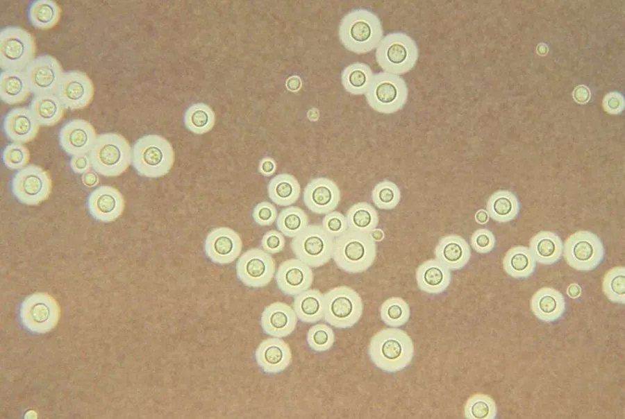

真菌 · 真菌界
新型隐球菌 Cryptococcus neoformans

鸽粪和土壤中常见的致病酵母菌，可经呼吸道感染人体，引起隐球菌性脑膜炎，对免疫力低下者尤其危险。
- 分类
- 门担子菌门纲银耳纲目银耳目科隐球酵母科属隐球酵母属
- 栖息环境
- 土壤、鸽粪、腐烂木材与树洞，在干燥的鸽粪中可长期存活
- 地理分布
- 全球分布，城市鸽群密集处尤为常见
- 保护级别
- 暂无评估（致病真菌，非保护对象）
物种志
新型隐球菌是担子菌门银耳目的致病酵母菌，以单细胞形态存在，细胞外有一层厚厚的多糖荚膜，是它最重要的致病因子。在培养基上菌落呈乳白色至黏液状；显微镜下可见圆形细胞，周围有明显的荚膜晕圈，出芽生殖。
新型隐球菌广泛分布于全球的土壤和鸽粪中，鸽子本身不发病，但其粪便为隐球菌提供了良好的生长环境。人吸入含菌的气溶胶后，多数情况下可自行清除；但免疫力低下者可能发展为肺部感染，甚至经血液传播至中枢神经系统，引起隐球菌性脑膜炎，病情严重。该病需长期抗真菌治疗。预防以远离大量鸽粪、保持环境卫生和增强免疫力为主；接触土壤后应洗手。
形态与习性
- 分类担子菌门银耳目隐球酵母属
- 形态单细胞酵母，外有多糖荚膜
- 菌落乳白色至黏液状
- 致病性经呼吸道感染，可致隐球菌性脑膜炎
- 高风险人群免疫力低下者，如器官移植和艾滋病患者
- 防控远离大量鸽粪、保持环境卫生、接触土壤后洗手
趣味知识
- 新型隐球菌常见于鸽粪中，但鸽子本身并不会因此生病。
- 它细胞外的厚荚膜是重要的致病因子，能帮助它逃避人体免疫。
- 免疫力低下者感染后可能发展为隐球菌性脑膜炎，需长期治疗。